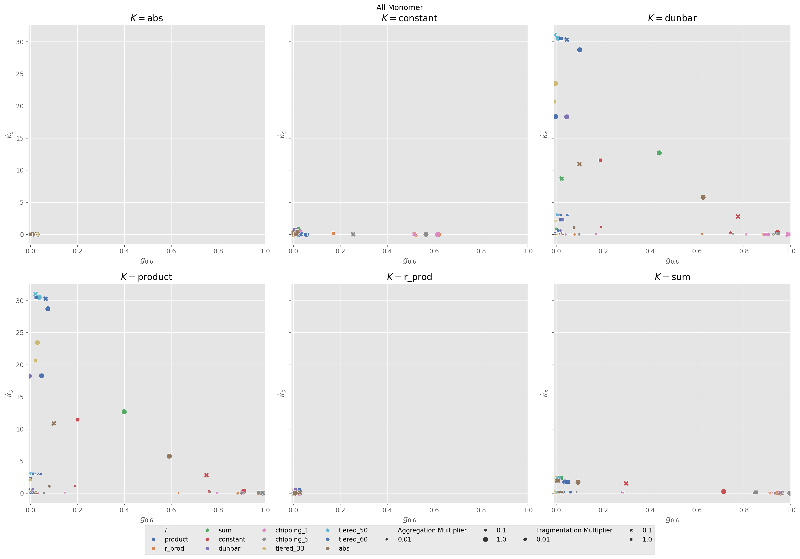
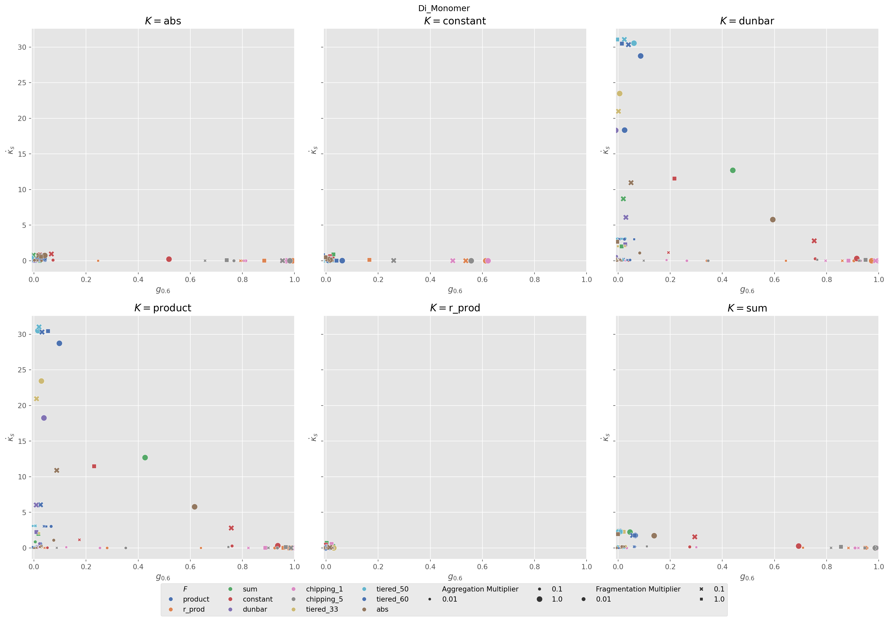
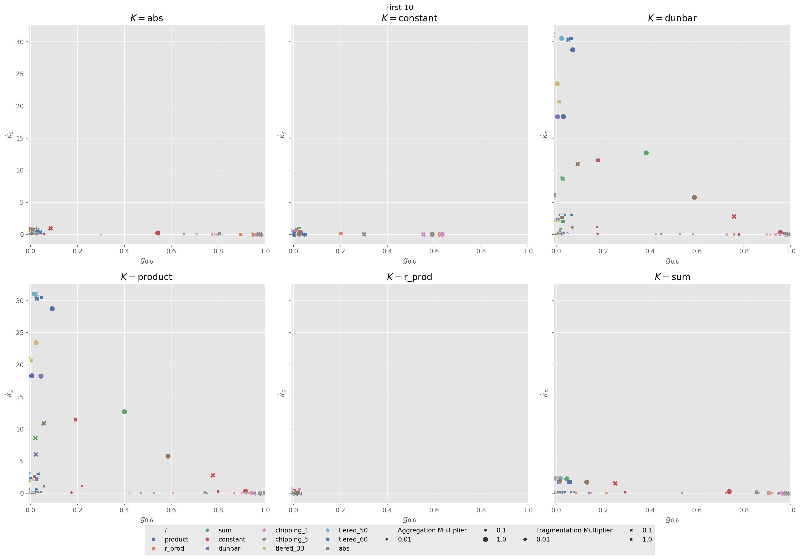
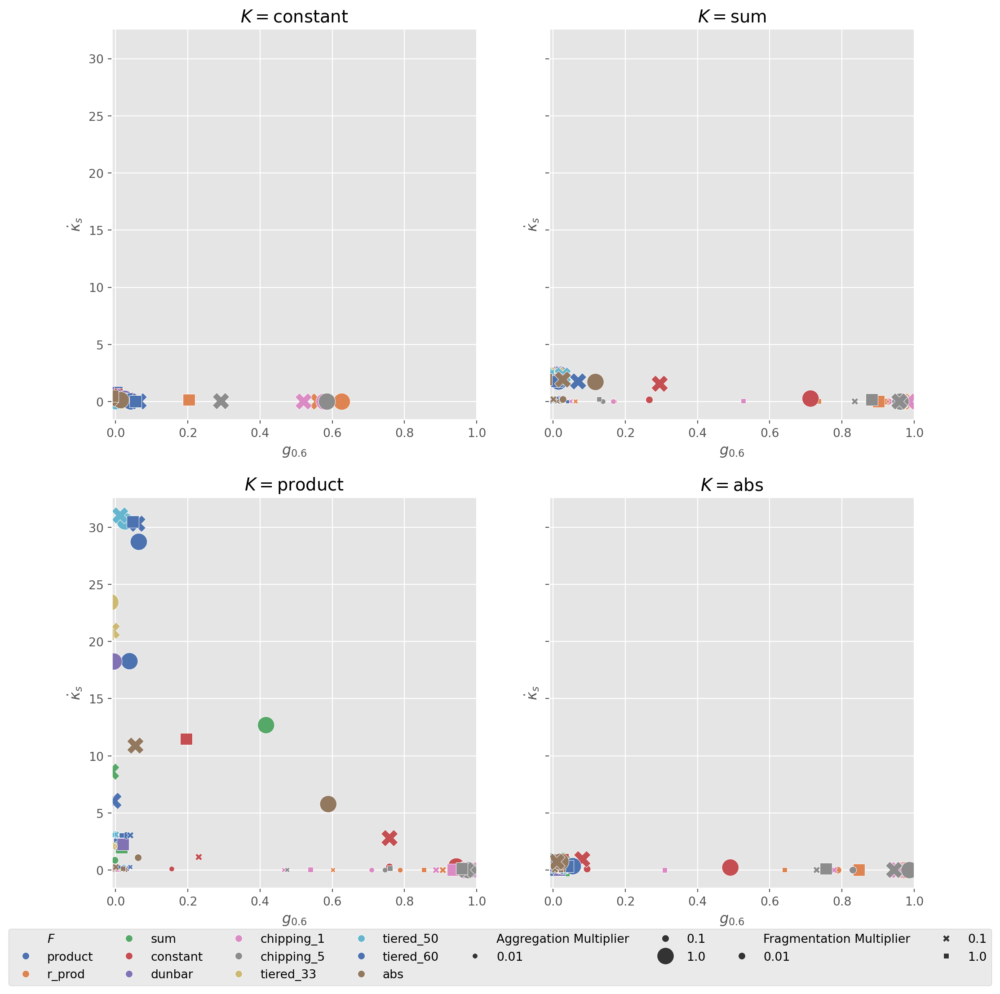
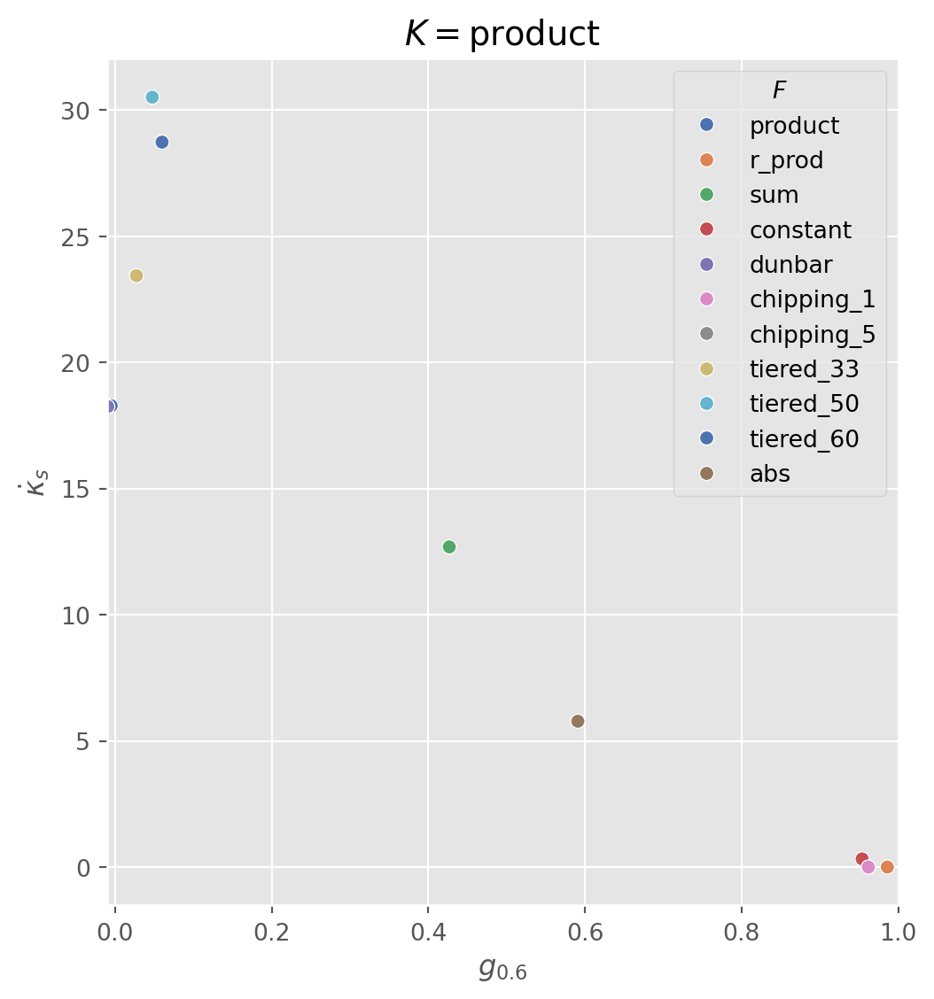

import sys, os
from pathlib import Path
_project_root = Path.cwd()
while not (_project_root / "src").exists():
_project_root = _project_root.parent
os.chdir(_project_root)Analysis
Setup
# library imports
from itertools import product
# package imports
import numpy as np
import pandas as pd
import seaborn as sns
import matplotlib.pyplot as plt
from scipy.integrate import odeint
from numba import jit
from IPython.display import display, Markdown
from odeintw import odeintw
import matplotlib.colors as mcolors
import matplotlib.cm as cm
# package global configs
plt.style.use(["ggplot"])
save_dir = Path("figs/main")# Define page width
IMG_WIDTH = 6
IMG_HEIGHT = 6Data Conglomerating
dataDir = Path("data")
df = None
taskDir = dataDir / "per_task_broad"
for file in taskDir.iterdir():
if df is None:
df = pd.read_csv(file, index_col=False)
else:
ndf = pd.read_csv(file, index_col=False)
df = pd.concat([df, ndf])
full_df = df.drop_duplicates(keep="first")
df.columnsIndex(['agg_kernel', 'agg_multiplier', 'frg_kernel', 'frg_multiplier', 'N',
't_length', 's_idx', 's_slope', 'init_cond', 'dom60', 'dom80'],
dtype='object')Establish consistent visual identifiers
kernels = df['agg_kernel'].unique().tolist() + df['frg_kernel'].unique().tolist()
kernels = pd.Series(kernels).unique()
palette = sns.color_palette("deep", len(kernels))
GROUP_COLORS = {k: palette[i] for i, k in enumerate(kernels)}
print(kernels)['product' 'r_prod' 'sum' 'constant' 'dunbar' 'abs' 'chipping_1'
'chipping_5' 'tiered_33' 'tiered_50' 'tiered_60']Viz
scatterplots of optimizations
for condition, df in full_df.groupby("init_cond"):
num_plots = len(df["agg_kernel"].unique())
ncols = 3
nrows = (num_plots + 1) // ncols
fig, axes = plt.subplots(
nrows=nrows,
ncols=ncols,
figsize=(IMG_WIDTH * ncols, IMG_HEIGHT * nrows),
sharey=True,
)
df[r"$F$"] = df["frg_kernel"]
df["Aggregation Multiplier"] = df["agg_multiplier"]
df["Fragmentation Multiplier"] = df["frg_multiplier"]
axes = axes.flatten()
for i, (kernel_name, sub_df) in enumerate(df.groupby("agg_kernel")):
ax = axes[i]
ax.set_xlabel(r"$g_{0.6}$")
ax.set_ylabel(r"$\dot{\kappa}_s$")
ax.set_xlim(left=-0.01)
ax.set_title(rf"$K=${kernel_name}")
sub_df["dom60"] += np.random.uniform(-0.03, 0.03, len(sub_df)) ## jitter
sns.scatterplot(
data=sub_df,
y="s_slope",
x="dom60",
ax=ax,
hue=r"$F$",
palette=GROUP_COLORS,
size="Aggregation Multiplier",
style="Fragmentation Multiplier",
legend=i == 0,
)
handles, labels = axes[0].get_legend_handles_labels()
axes[0].get_legend().remove()
fig.legend(handles, labels, loc="lower center", ncol=8, bbox_to_anchor=(0.5, -0.05))
plt.subplots_adjust(bottom=0.05) # make room
plt.suptitle(condition)
plt.tight_layout()
save_path = save_dir / f"{condition}_all.pdf"
plt.savefig(save_path, bbox_inches="tight", backend="pdf")
plt.show()


key_kernels = ["constant", "sum", "product", "abs"]
num_plots = len(key_kernels)
ncols = 2
nrows = (num_plots + 1) // ncols
fig, axes = plt.subplots(
nrows=nrows,
ncols=ncols,
figsize=(IMG_WIDTH * ncols, IMG_HEIGHT * nrows),
sharey=True,
)
cond = "First 10"
df = full_df[full_df["init_cond"] == cond].copy()
df[r"$F$"] = df["frg_kernel"]
df["Aggregation Multiplier"] = df["agg_multiplier"]
df["Fragmentation Multiplier"] = df["frg_multiplier"]
axes = axes.flatten()
for i, kernel_name in enumerate(key_kernels):
ax = axes[i]
sub_df = df[df["agg_kernel"] == kernel_name]
sub_df = sub_df.copy()
sub_df["dom60"] += np.random.uniform(-0.03, 0.03, len(sub_df)) ## jitter
ax.set_xlabel(r"$g_{0.6}$")
ax.set_ylabel(r"$\dot{\kappa}_s$")
ax.set_xlim(left=-0.01)
ax.set_title(rf"$K=${kernel_name}")
sns.scatterplot(
data=sub_df,
y="s_slope",
x="dom60",
ax=ax,
hue=r"$F$",
palette=GROUP_COLORS,
size="Aggregation Multiplier",
sizes=(20, 200),
style="Fragmentation Multiplier",
legend=i == 0,
)
handles, labels = axes[0].get_legend_handles_labels()
axes[0].get_legend().remove()
fig.legend(handles, labels, loc="lower center", ncol=8, bbox_to_anchor=(0.5, -0.05))
plt.subplots_adjust(bottom=0.05) # make room
save_path = save_dir / f"{cond}_costSlope_vs_domination.pdf"
plt.savefig(save_path, bbox_inches="tight", backend="pdf")
plt.show()
key_kernels = ["product"]
fig, ax = plt.subplots(
figsize=(IMG_WIDTH, IMG_HEIGHT),
)
# filter
cond = "First 10"
df = full_df[full_df["init_cond"] == cond].copy()
df = df[df["agg_multiplier"] == 1].copy()
df = df[df["frg_multiplier"] == 0.01].copy()
# rename
df[r"$F$"] = df["frg_kernel"]
df["Aggregation Multiplier"] = df["agg_multiplier"]
df["Fragmentation Multiplier"] = df["frg_multiplier"]
for i, kernel_name in enumerate(key_kernels):
sub_df = df[df["agg_kernel"] == kernel_name]
sub_df = sub_df.copy()
sub_df["dom60"] += np.random.uniform(-0.03, 0.03, len(sub_df)) ## jitter
ax.set_xlabel(r"$g_{0.6}$")
ax.set_ylabel(r"$\dot{\kappa}_s$")
ax.set_xlim(left=-0.01)
ax.set_title(rf"$K=${kernel_name}")
sns.scatterplot(
data=sub_df,
y="s_slope",
x="dom60",
ax=ax,
hue=r"$F$",
palette=GROUP_COLORS,
legend=i == 0,
)
plt.subplots_adjust(bottom=0.05) # make room
save_path = save_dir / f"{cond}_{kernel_name}_Pareto.pdf"
plt.savefig(save_path, bbox_inches="tight", backend="pdf")
plt.show()
for k, c in GROUP_COLORS.items():
r, g, b = c[:3]
print(f"\\definecolor{{{k}}}{{rgb}}{{{r:.2f},{g:.2f},{b:.2f}}}")\definecolor{product}{rgb}{0.30,0.45,0.69}
\definecolor{r_prod}{rgb}{0.87,0.52,0.32}
\definecolor{sum}{rgb}{0.33,0.66,0.41}
\definecolor{constant}{rgb}{0.77,0.31,0.32}
\definecolor{dunbar}{rgb}{0.51,0.45,0.70}
\definecolor{abs}{rgb}{0.58,0.47,0.38}
\definecolor{chipping_1}{rgb}{0.85,0.55,0.76}
\definecolor{chipping_5}{rgb}{0.55,0.55,0.55}
\definecolor{tiered_33}{rgb}{0.80,0.73,0.45}
\definecolor{tiered_50}{rgb}{0.39,0.71,0.80}
\definecolor{tiered_60}{rgb}{0.30,0.45,0.69}